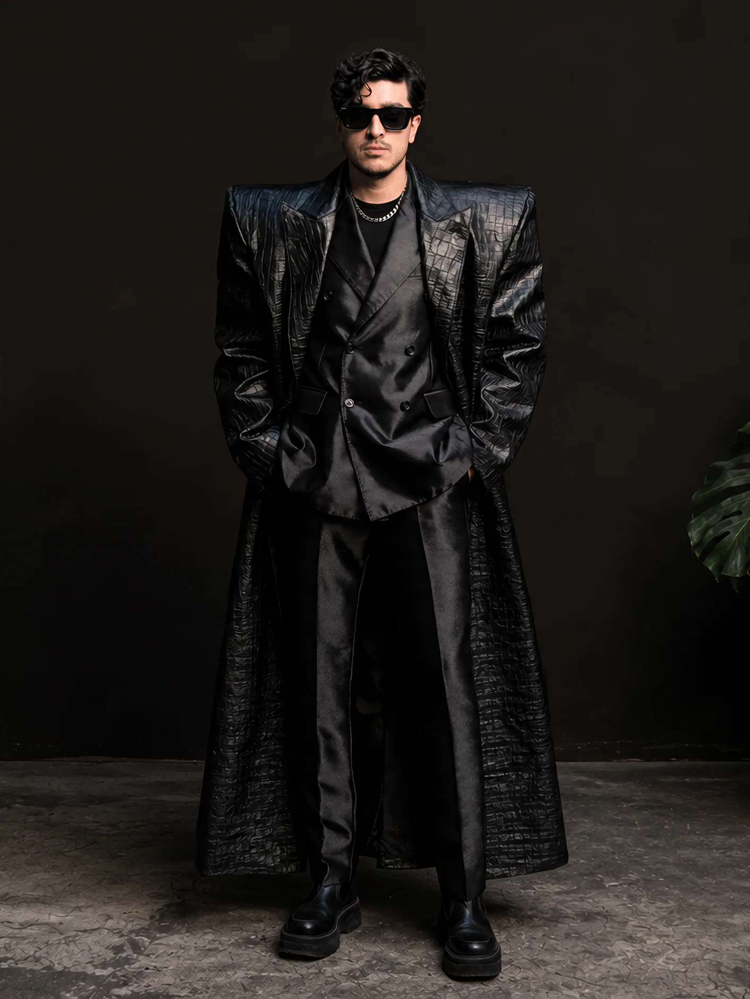

Artist Study 01
Cabizbajo
Artist Study 01 / Cabizbajo
Lotus 63
Cabizbajo wears Lotus 63, a study in how clothing could move between softness and structure.
The project imagines a flexible material that can stiffen selectively across the garment, allowing the silhouette to expand, protect and reshape itself around the body.

The Look
Lotus 63 transforms conventional tailoring through exaggerated shoulders, a long protective outer layer and a silhouette built around controlled volume.
Material / Lotus 63
Softness Becomes Structure.
Lotus 63 imagines a flexible composite that can stiffen selectively across the garment. Instead of a fixed silhouette, the material allows clothing to change its volume and structure around the wearer.
Flexible → Structural
Soft → Protective
Garment → Architecture